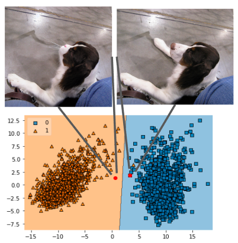
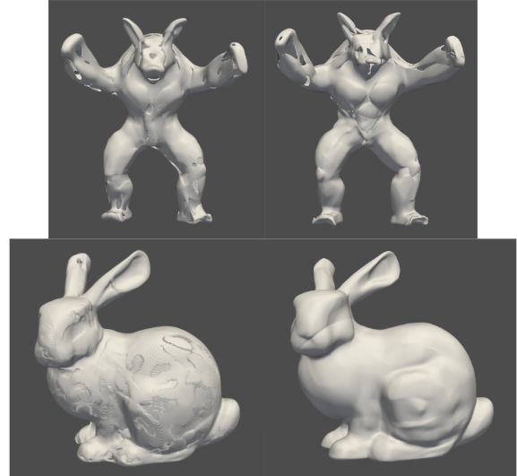
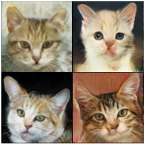

|
Sreevidya Chintalapati
I am currently a research associate at IIT Madras working in the Computational Imaging lab under the guidance of Kaushik Mitra, having done my undergraduate studies at IIT Gandhinagar. I enjoy working on deep learning research specifically in the area of computer vision.
Email /
CV /
Linkedin
|
|
|
 |
Counterfactual Image Generation Using Text Guidance
Ongoing project under Prof. Sutanu Chakraborti, Indian Institute of Technology Madras (Nov 2022 - Jan 2023)
Aimed at generating counterfactuals conditioned on the initial image, and a text prompt to control its several attributes while minimally altering the image.
We propose to perform image inpainting on regions corresponding to high confidence towards the target class using Stable Diffusion and CLIP models.
|
|
 |
PHASE: 3D Surface Mesh Reconstruction
Project under Mr. Siddarth Jha, Preimage.ai (April 2022 - May 2022)
Implemented an implicit 3D reconstruction neural network that constructs a surface mesh using its point cloud
data. The network is trained to find the occupancy metric of different point coordinates in the point cloud, in
turn finding the points present on the surface during inference.
|
|
|
Steel Surface Defect Detection and Classification
Project under Prof. Somashekhar, Indian Institute of Technology Madras (Sept 2020 - Nov 2020)
Involves performing semantic segmentation on pictures of steel surfaces to classify and localize the surface
defects using the UNET architecture. Got an average of 95 - 97% IOU score.
|
|
 |
Few-Shot Image Synthesis using Generative Networks
Project under Prof. Anurag Mittal, Indian Institute of Technology Madras (Sept 2020 - Nov 2020)
Simplified SOTA generative networks namely StyleGanv1,2 to lower network capacity and introduced dense
connections between multiple resolutions. Improved perceptual image quality scores by 10% even with as little
as 100-1000 training images.
|
|
{kind=link}